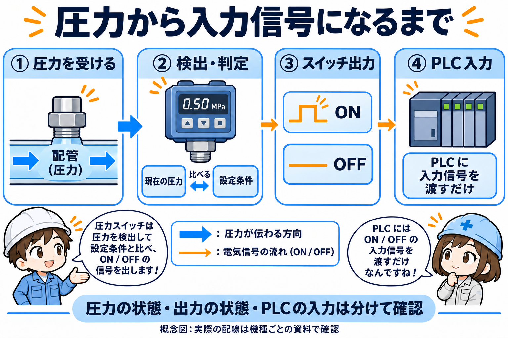
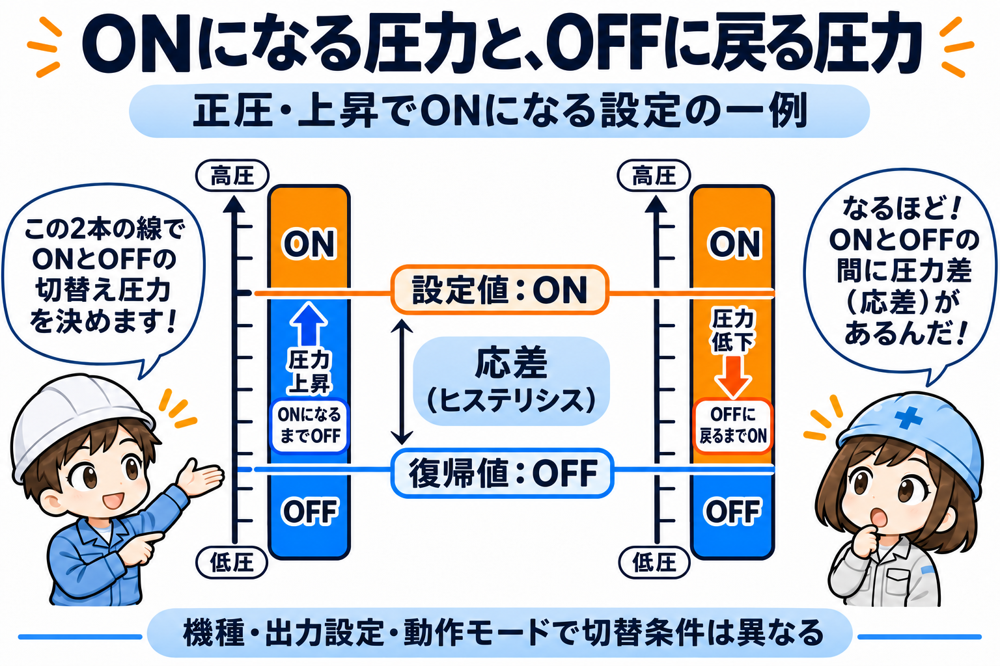
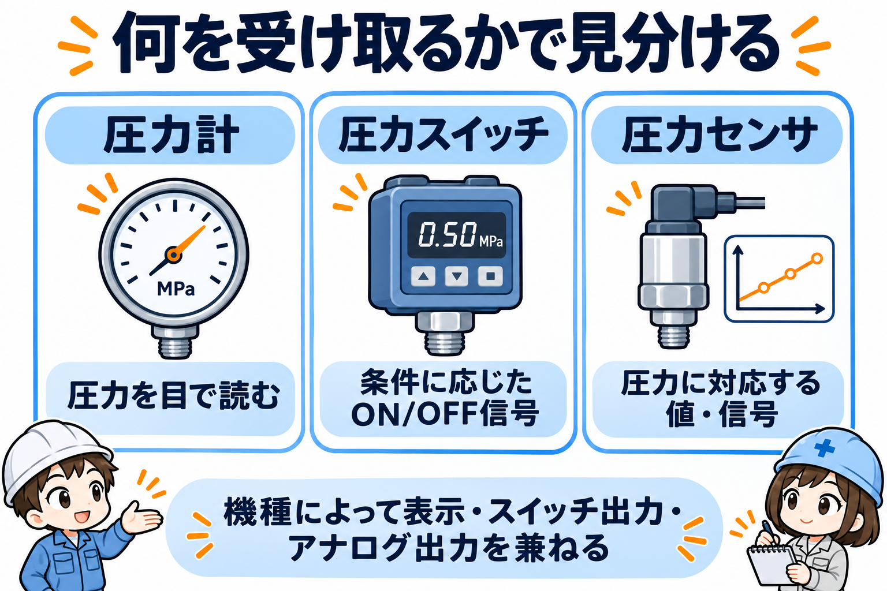
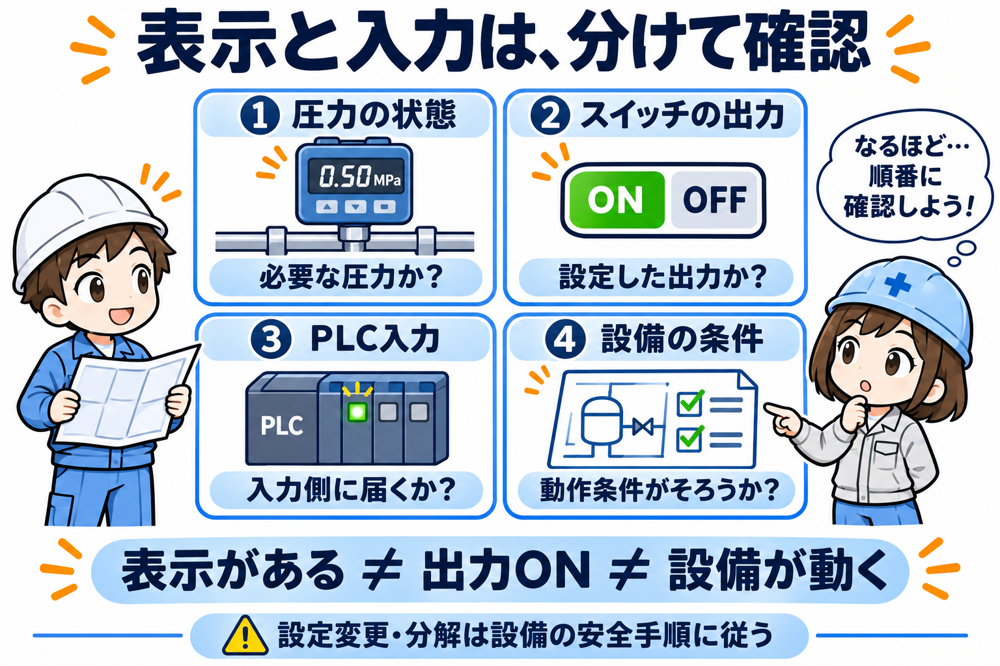

この記事が向いている人
- 圧力スイッチの基本的な役割を知りたい人
- 設定圧でON/OFFする考え方を整理したい人
- 圧力がうまく取れない時の見方を知りたい人
圧力スイッチは、配管や機器の圧力を検出し、決められた条件に応じて電気信号を切り替える部品です。空圧設備では、供給圧力の確認や圧力低下の監視、真空吸着の確認などに使われます。ただし、監視する場所や目的に合う形式を使うことが前提です。
まずは『圧力 → 検出・判定 → スイッチ出力 → PLCなどの入力』という流れで捉えると分かりやすくなります。圧力スイッチは信号を出す側、PLCはその信号を受け取ってほかの条件と合わせて判断する側です。
圧力を作るコンプレッサや、供給圧力を調整するレギュレータとは役割が違います。また、スイッチがONでも、設備全体が運転可能・安全であるとまでは判断できません。

先輩圧力スイッチは、圧力を作る部品ではなく、圧力の状態を信号で知らせる部品だよ。
後輩信号が出たことと、設備を動かしてよいことは別に見るんですね。
圧力スイッチには、圧力を機械的な動きに変えて接点を切り替える方式と、圧力をセンサで検出して電子回路で判定する方式があります。
| 方式 | 仕組みの捉え方 | 確認するもの |
|---|---|---|
| 機械式 | 受圧部の動きを利用して接点を切り替える。ピストン・ばね・レバーでマイクロスイッチを作動させる製品などがある | 接点の仕様、使用圧力範囲、適用流体 |
| 電子式 | 圧力センサの検出結果を設定条件と比較して、電子的に出力を切り替える | 電源、NPN/PNPなどの出力仕様、判定モード |
機械式の構造は製品によって異なり、すべてが同じ受圧部を使うわけではありません。電子式には数値表示や複数出力を持つものもあります。外観だけで出力仕様や接続方法を決めず、型式と説明書を照合します。
空気用の製品を、そのまま水や油の圧力確認に使えるわけではありません。適用流体、正圧・真空などの圧力範囲、接液部の材質は製品ごとに確認が必要です。
切替条件は、『圧力が上がるとONになる』ものだけではありません。出力を反転させる設定や、一定の圧力範囲に入ったときに出力するモードを持つ製品もあります。まずは対象機種の動作図で、何を検出するとONになるかを読みます。
圧力の上昇でONになる例では、ONへ切り替わる点と、下降してOFFへ戻る点を分けて設けることがあります。この2点の差を応差、またはヒステリシスと呼びます。境界付近で圧力が小さく揺れたときに、出力が頻繁に切り替わるのを抑える考え方です。

ここでいう復帰値は、元の出力状態へ戻る側の圧力を指す説明用語です。機種によって設定項目名や設定方法は異なり、応差が固定の製品もあります。応差は圧力の差であり、切替までの時間を表す応答時間とは別です。
設定値は設備が必要とする条件に基づくもので、『とりあえず下げれば動く』ものではありません。この記事の図は読み方の概念図で、推奨設定値や調整手順ではありません。

| 見たいもの | 主な役割 | 注意 |
|---|---|---|
| 圧力計 | その場所の圧力を表示して読む | 表示だけの機種か、電気出力を持つ機種かは仕様による |
| 圧力スイッチ | 設定条件に対してON/OFF信号を出す | 出力が何を意味するかは設定・設備仕様による |
| 圧力センサ | 圧力を検出して、電圧・電流などの情報へ変える | スイッチ出力・表示を一体化した製品もある |
これらは完全に別々の箱とは限りません。デジタル圧力スイッチの内部にも圧力センサがあり、表示やアナログ出力を併せ持つ製品があります。『数値を見たい』『条件成立をON/OFFで受けたい』と、必要な情報を分けると整理しやすくなります。
表示と信号の違いは、圧力スイッチと圧力計の違いでも整理しています。
表示の数字、スイッチの出力表示、PLC入力、設備の動作は、それぞれ別の情報です。数値が表示されているだけで、目的の出力がONしているとは限りません。表示色も設定できる製品があり、『緑だから必ず正常』とは決めつけません。

信号の受け取り方はPLC入出力ユニットの基礎、動作条件はインターロック回路の基礎も参考になります。
原因を確かめず、設定値を変えたり入力を強制ONにしたりして、運転条件を通すことはしません。配管の取外し・配線・保守には電源や残圧などの危険があります。必要な作業は、対象機種の説明書と設備の安全手順に従い、知識と権限のある担当者に引き継ぎます。
一般制御用の圧力スイッチ単体で、人の安全を保証できるわけではありません。安全機能が必要な用途は、用途に適した機器選定と設備全体の安全設計を別に確認します。
SMC ZSE30A(F)/ISE30A取扱説明書と、IS3000機械式圧力スイッチの公式資料を参考に、方式の違いと信号の読み方を整理しました。設定項目・出力・対応流体・作業手順は対象型式の最新資料を優先してください。公式資料確認日2026年11月13日。